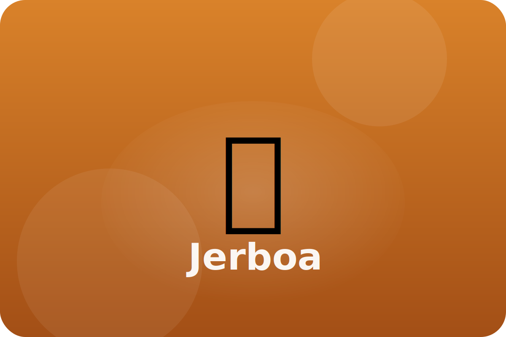

Desert
Tiny hopper of the dunes
Jerboas are tiny rodents with long tails and legs. They skip across the sand at night to find seeds and insects.
Springy Legs
Jerboas hop in big zigzags to confuse predators.
Long Tail
A tufted tail helps them balance during giant leaps.
Cool Burrows
They sleep in deep burrows during the day to escape the heat.
Keep exploring the Jerboa
Watch the Jerboa in action
Jerboa videos for kids